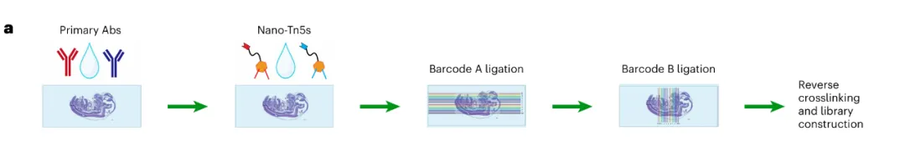
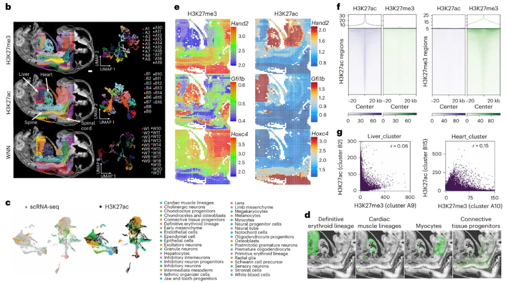
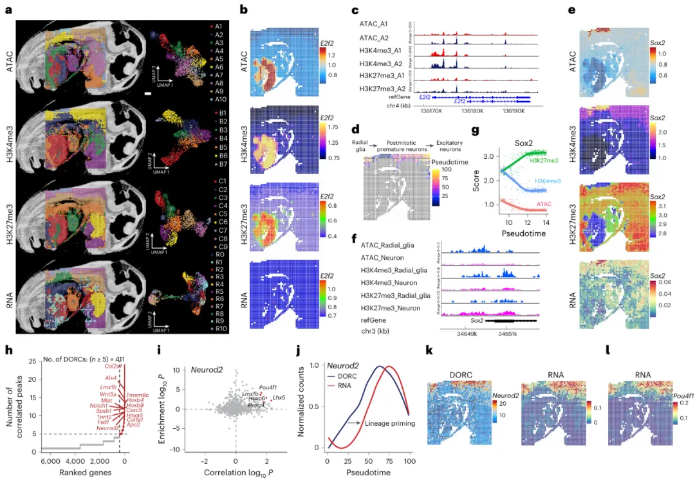
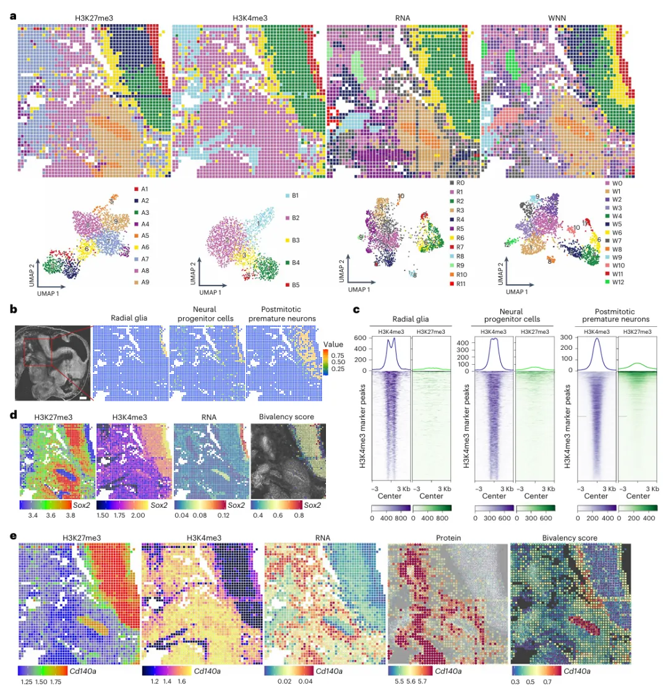
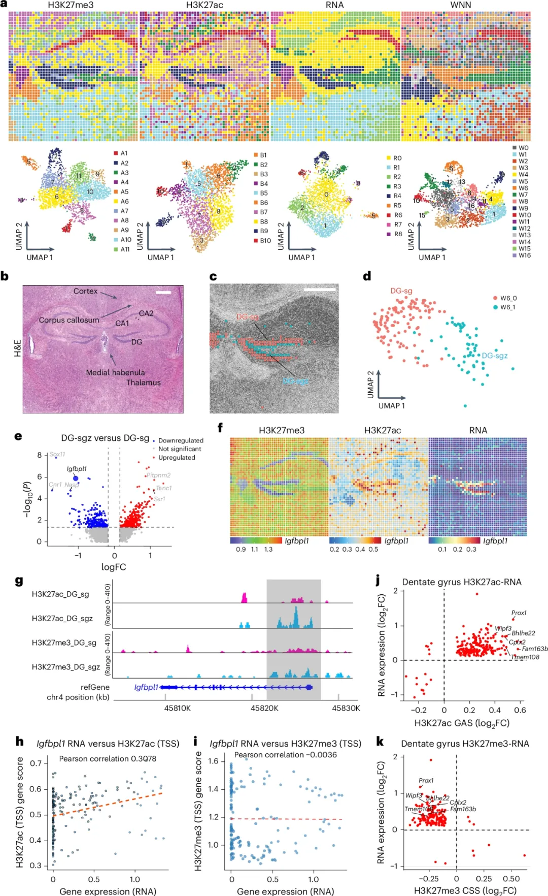

Spatial-Mux-seq空间多组学，一网打尽染色质特征、转录组、蛋白质修饰与表达
原文：https://mp.weixin.qq.com/s?__biz=MzAwMzIzOTk5OQ==&mid=2247528763&idx=1&sn=2133950d83751c5df68197e7ce324ebf&chksm=9b3c086bac4b817dca59be6f41013b2f56084c1de352263a2d39bf0fd33315b5d4f5db4b74a4#rd 合集：文献速递
一、写在前面
本次分享的是2025年1月发布于《nature methods》的文章**(IF ：36.1)，** 感兴趣的同学可以看看原文：Pengfei Guo, Liran Mao, Yufan Chen, et al., "Multiplexed spatial mapping of chromatin features,transcriptome and proteins in tissues,"nature methods, 2025, doi: 10.1038/s41592-024-02576-0 .
细胞的表型和功能状态受到基因组、表观基因组、转录组、蛋白质组和代谢组等多个组学层次的复杂分子调控。现有的空间组学方法虽然可以在组织背景下研究这些层次，但通常仅限于一种或两种模态，无法提供完整的细胞身份视图。
这篇文章中，作者开发了一种全新的空间多组学技术 ——Spatial-Mux-seq。该技术能够原位同时捕获染色质可及性、两种组蛋白修饰、转录组以及蛋白质表达，为解析跨越基因调控各层次的复杂网络提供了全新的视角。****
Spatial-Mux-seq技术 可以作为一个强大的工具，在组织背景下同时评估多个组学层。通过提供对复杂生物系统及其潜在调控机制的更全面理解，其有望在发育生物学、疾病研究和组织工程等领域推动知识的进步。
** **
对空间转录组、scRNA-seq分析及联合分析感兴趣的同学可参考： 空间转录组学习手册合辑scRNA-Seq学习手册Seurat V5更新版一文搞定空间转录组与单细胞测序的整合分析CellChat空转细胞通讯合辑 如果需要数据分析指导 、生信热点全文复现 、自测数据个性化分析 辅导，欢迎联系客服微信[Biomamba_zhushou]
二、技术原理
Spatial-Mux-seq技术的原理如下：首先将冷冻切片固定在载玻片上，经甲醛固定以保持细胞结构和分子状态的完整性；之后在组织切片上进行原位Tn5转座酶处理，其能够插入带有条形码的DNA适配器和独特的连接链到可及染色质区域，一方面可以进行后续分子追踪，另一方面可以连接其他条形码。之后使用两种针对不同组蛋白修饰的一抗对切片进行孵育；再加入物种特异性的纳米抗体-Tn5 融合蛋白，这些融合蛋白带有独特的连接链，用于区分不同的组蛋白修饰。与此同时，还可以使用寡核苷酸偶联抗体检测细胞表面蛋白的表达，并通过生物素标记的 poly-T原位逆转录捕获细胞mRNA以及寡核苷酸单链，最后，利用微流控芯片，将一组预定义的 DNA 条形码分布在组织切片上，创建空间条形码 “像素” ，最终形成二维空间网格。每个步骤引入的连接序列最终与空间条形码结合，使得每个空间“像素”内的ATAC-seq、CUT&Tag，mRNA，和蛋白共享相同的空间条形码，以便后续的多模态整合分析(Fig. 1a)。
Fig.1

三、主要结果
1.组蛋白修饰共分析- 验证spatial-Mux-seq 在捕获不同表观遗传景观方面的准确性****
为评估方法的特异性，作者使用 Spatial-Mux-seq 技术对小鼠胚胎组织中的组蛋白修饰（H3K27me3 和 H3K27ac）进行分析，经过无监督聚类分析，H3K27me3 被分为 19 个簇（标记为 An），H3K27ac 被分为 16 个簇（标记为 Bn）(Fig. 1b)。通过将小鼠胚胎（E13.5）的单细胞 RNA 测序数据转移到 Spatial-Mux-seq 数据，能够识别不同的细胞类型（ Fig. 1c）。计算染色质沉默评分（CSS）和基因活性评分（GAS）来预测基因表达，分别对应于 H3K27me3（抑制性标记）和 H3K27ac（活性标记），结果发现在兴奋性神经元中，H3K27ac 与基因表达呈正相关，而 H3K27me3 与基因表达呈负相关，进一步验证了表观遗传标记与转录本丰度之间的相关性 （Fig. 1d）。通过分析肝脏中 H3K27me3 和 H3K27ac 的特征峰，作者发现这些修饰在其对应的标记峰中显著富集（Fig. 1f）,且肝脏和心脏簇中的H3K27me3 和 H3K27ac 信号之间没有明显的相关性（Fig. 1g）。
Fig.1

2.H3K27me3 、H3K4me3、转录组和染色质可及性的四模态分析。
单细胞纳米抗体基础的 CUT&Tag 技术已被用于测量开放染色质和细胞表面标记，但转录组分析尚未探索。而Spatial-Mux-seq能够在同一组织切片中共分析染色质可及性（ ATAC）、两种组蛋白修饰（H3K4me3 和 H3K27me3）和转录组。该技术在每个像素中获得了中位数为 39,014 的 ATAC 独特片段、6,657 的 H3K4me3 片段和 8,496 的 H3K27me3 片段，且单独组学数据和共分析模态相比，多模态数据的质量并未受到影响。 除此之外，作者还结合了 ATAC 和 RNA-seq 技术，同时分析了染色质可及性和基因表达，通过 无监督聚类分析， 发现 ATAC、H3K4me3、H3K27me3 和 RNA 数据分别形成了 10、7、9 和 11 个簇，这些簇与组织的组织学特征一致（ Fig. 2a）。 其中典型的E2F激活剂E2f2 在A2肝簇中比A1肝簇具有更强的开放染色质信号（Fig. 2b，c），通过伪时间分析**（ pseudotime analysis）对 ATAC 数据进行分析，作者展示了放射状胶质细胞到分化神经元的发育轨迹（Fig. 2d）。同时 结果还显示出放射状胶质细胞中具有染色质可及性高****，H3K4me3 富集，H3K27me3 水平低和神经发育关键调节因子 Sox2的区域性表达等特征**（Fig. 2e-g）。 进一步对放射状胶质细胞和分化神经元簇的空间 RNA 数据进行基因本体（GO）分析**，** 分析结果与解剖学注释一致，进一步验证了这些细胞类型的生物学功能**。**
除此之外，作者利用FigR 框架整合了多模态数据（包括染色质可及性、组蛋白修饰和基因表达），以推断基因调控网络（GRNs），并揭示神经发育过程中的关键调控机制。通过共分析空间ATAC-seq 和 RNA-seq 数据集，作者识别了411 个谱系决定基因，这些基因被标记为不同的调控染色质区域 （Distinctive Domains of Regulatory Chromatin, DORC）（Fig. 2h）。分析结果还证实了Neurod2 是一个已知的关键基因，它在神经祖细胞分化为成熟神经元的过程中起决定性作用（Fig. 2k）。且DORC 可及性的变化先于基因表达的变化，这归因于谱系预编程（lineage priming）（Fig. 2j），研究人员计算了 Neurod2 DORC 区域中转录因子（TF）结合位点的富集情况，以推断潜在的 TF 激活因子，Pou4f1 、Lhx5 和 Lmx1b作为转录激活因子在分化神经元中的高表达得到了验证 （Fig. 2l）。以上结果展示了多模态空间组学技术在解析基因调控网络中的强大能力，特别是在揭示神经发育过程中的关键调控机制方面。
Fig.2

3.细胞表面蛋白与 mRNA和组蛋白修饰共谱分析。****
之后，作者共分析了 H3K27me3/H3K4me3、基因表达和七种细胞表面蛋白。通过这种方法，研究人员在小鼠胚胎第13天的延髓区域（E13）获得了大量的独特片段和基因表达数据，并通过无监督聚类分析，识别出具有不同空间模式的细胞类型特异性分布 （Fig. 3a-b）。在从径向胶质细胞向分化神经元的转变过程中，作者发现双价性在动态变化，径向胶质细胞在H3K4me3定义的启动子处的H3K27me3富集度最低，表明其双价性降低 （Fig. 3c）。此外，研究人员还通过双价性评分来量化双价染色质域，例如Sox2和Pax3基因位点在后有丝分裂的早熟神经元中比径向胶质细胞簇显示出更高的双价性评分，反映了在分化过程中 H3K27me3增加和H3K4me3减少（Fig. 3d）。在表观基因组和基因表达分析的同时，研究人员还详细分析了组织内表面蛋白的分布，发现CD140a 蛋白主要在非神经区域检测到，与其基因表达和H3K4me3的存在一致，但没有H3K27me3。在上皮细胞簇中，CD140a位点的双价H3K27me3/H3K4me3与基因表达和蛋白的缺失相对应（Fig. 3e）。综上所述， spatial-Mux-seq技术能够在同一组织切片中同时测量两种组蛋白修饰、基因表达和蛋白质。
Fig.3

4.小鼠脑中的多种空间映射。****
为了 评估spatial-Mux-seq技术在不同组织中的应用。作者选取了小鼠出生后第21天（P21）的海马区域，共分析了H3K27me3 （组蛋白修饰，与基因抑制相关）、H3K27ac（组蛋白修饰，与基因激活相关）和转录组（基因表达）。通过无监督聚类，研究人员识别出11个H3K27me3簇（An）、10个H3K27ac簇（Bn）和9个RNA簇（Rn）（Fig. 4a-b）。这些簇的空间分布与H&E染色的解剖注释一致。同时作者利用加权最近邻分析（WNN analysis）对多种模态的数据集进行整合分析。这种方法通过整合不同模态的数据（如组蛋白修饰和基因表达），增强了聚类效果，并识别出了一些仅靠单一模态无法检测到的新型细胞簇。结果显示海马齿状回颗粒细胞存在齿状回颗粒细胞层（ DG-sg，cluster W6_0）和齿状回颗粒细胞亚颗粒区（DG-sgz，cluster W6_1）两个亚群 （Fig. 4c-d）。从DG-sgz到DG-sg的转变过程中，有 243个基因下调，361个基因上调（P调整值<0.05，平均对数变化量>0.25）（Fig. 4e）。例如，Igfbpl1在DG-sg中的表达量低于DG-sgz，而Prox1在DG-sg中的表达量高于DG-sgz（Fig. 4f）。结果显示H3K27ac 与基因表达之间存在强正相关，而H3K27me3与基因表达之间存在负相关（Fig. 4g-i）。例如，Prox1、Wipf2和Bhlhe22等基因在H3K27ac信号上表现出显著富集，而在H3K27me3信号上几乎没有富集，这证实了 H3K27me3和H3K27ac在基因表达调控中相反的机制 （Fig. 4j-k）。以上结果说明通过 WNN分析整合多模态数据，spatial-Mux-seq不仅增强了聚类效果，还揭示了新的细胞亚群和表观遗传调控机制。****
Fig.4

四、学习手册
对空间转录组、scRNA-seq分析及联合分析感兴趣的同学可参考：
空间转录组学习手册合辑scRNA-Seq学习手册Seurat V5更新版一文搞定空间转录组与单细胞测序的整合分析CellChat空转细胞通讯合辑

如何联系我们

 留一个领取资料、免费两周学习版服务器的微信号[Biomamba_zhushou]，方便各位随时交流。同时我们也构建了交流群矩阵，欢迎大家入群讨论。
大家可以阅读完这几篇之后添加给生信入门初学者的小贴士
如何搜索公众号过往发布内容
留一个领取资料、免费两周学习版服务器的微信号[Biomamba_zhushou]，方便各位随时交流。同时我们也构建了交流群矩阵，欢迎大家入群讨论。
大家可以阅读完这几篇之后添加给生信入门初学者的小贴士
如何搜索公众号过往发布内容
已有生信基地联系方式的同学无需重复添加

 您点的每个赞和在看，我都认真当成了喜欢
您点的每个赞和在看，我都认真当成了喜欢